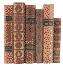
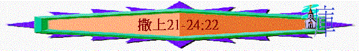

|
成 敗 與 興 衰 |
||
|
事
奉 |
民
族 |
君
王 |
|
撒上1-3 |
撒上4-7 |
撒上8-撒下24 |
丙.君王的興衰(撒上8-撒下24)
二.大衛的興衰(撒上16-撒下24)
Ⅱ.大衛的逃亡時期----人的倚靠與神的保守(18:6-31:13)
b.逃亡的路程(21-31)
(1)挪伯(21:1-9)----尋求神的祭司
「大衛到了挪伯祭司亞希米勒那裡，亞希米勒戰戰兢兢地出來迎接他，問他說：「你為什麼獨自來，沒有人跟隨呢？」大衛回答祭司亞希米勒說：「王吩咐我一件事說：『我差遣你委託你的這件事，不要使人知道。』故此我已派定少年人在某處等候我。」21:1-2
〜「挪伯」接近掃羅王宮的所在地基比亞，當時代替示羅設有中央祭壇，但約櫃仍在基列耶琳。
〜大衛在逃亡日子，仍曉得尋找屬神的祭司幫助（當然他仍有軟弱地方----向亞比米勒說謊)。
〜大衛倚靠神的心需要成長的，初時可以倚靠人的幫助，但至終他仍要單單仰望神。
(A)尋求食物
「現在你手下有什麼？求你給我五個餅或是別樣的食物。」祭司對大衛說：「我手下沒有尋常的餅，只有聖餅；若少年人沒有親近婦人才可以給。」」21:3-4
「耶穌對他們說：「經上記著大衛和跟從他的人飢餓之時所做的事，你們沒有念過嗎？他怎麼進了神的殿，吃了陳設餅，這餅不是他和跟從他的人可以吃得，惟獨祭司才可以吃。再者，律法上所記的，當安息日，祭司在殿裡犯了安息日還是沒有罪，你們沒有念過嗎？但我告訴你們，在這裡有一人比殿更大。『我喜愛憐恤，不喜愛祭祀。』太12:3-７
〜昔日陳設餅只可以是祭司在聖處吃，但神喜愛憐恤，人在絕境處，也可以有彈性處理，祭也容許大衛分別為聖吃祭物。
(B)尋求武器
「祭司說：「你在以拉谷殺非利士人歌利亞的那刀在這裡，裹在布中，放在以弗得後邊，你要就可以拿去；除此以外，再沒有別的。」大衛說：「這刀沒有可比的！求你給我。」」21:9
(C)尋求真神
「亞希米勒為他求問耶和華，又給他食物，並給他殺非利士人歌利亞的刀。」」22:10
〜大衛不單是尋求人的幫助，他應是期望祭司為他求問神(關乎前面的方向)。
(2)迦特(21:10-15)----仰望神的榮光
「那日大衛起來，躲避掃羅，逃到迦特王亞吉那裡。亞吉的臣僕對亞吉說：「這不是以色列國王大衛嗎？那裡的婦女跳舞唱和，不是指著他說『掃羅殺死千千，大衛殺死萬萬』嗎？」」21:10-11
〜迦特是非利士人重要的城邑，而哥利亞是迦特人。
(A)假裝瘋癲
「大衛將這話放在心裡，甚懼怕迦特王亞吉，就在眾人面前改變了尋常的舉動，在他們手下假裝瘋癲，在城門的門扇上胡寫亂畫，使唾沫流在鬍子上。」21:12-13
〜大衛恐怕非利士人懷疑他，或擊殺他，所以假裝瘋癲。
(B)被人輕看
「亞吉對臣僕說：「你們看，這人是瘋子。為什麼帶他到我這裡來呢？」21:14
(C)仰望神榮
「（大衛在亞比米勒面前裝瘋，被他趕出去，就作這詩。）我要時時稱頌耶和華；讚美他的話必常在我口中。」詩34:1
「凡仰望他的，便有光榮；他們的臉必不蒙羞。」詩34:5
〜這首詩篇是大衛在亞比米勒(迦特王亞吉的國號)面前裝瘋而寫的，他在人面前雖看為羞恥，但他仍仰望神的榮光，在祂面前，他信必不蒙羞。
(3)亞杜蘭洞(22:1-2)----投靠神的蔭下
(A)逃到洞裡
「大衛就離開那裡，逃到亞杜蘭洞。他的弟兄和他父親的全家聽見了，就都下到他那裡。凡受窘迫的、欠債的、心裡苦惱的都聚集到大衛那裡；大衛就作他們的頭目，跟隨他的約有四百人。」22:1-2
〜「亞杜蘭洞」在猶大西部的山區，有一些受窘迫的人，有難處的人投靠大衛。
(B)投神蔭下
「（大衛逃避掃羅，藏在洞裡。那時，他作這金詩，交與伶長。調用休要毀壞。）神啊，求你憐憫我，憐憫我！因為我的心投靠你。我要投靠在你翅膀的蔭下，等到災害過去。」詩57:1
〜這首詩是大衛逃避掃羅、藏在洞裡所寫，他雖然逃至洞中，但他仍知道真正的避難所是在神蔭下，他要的是要投靠其中。
(4)摩押(22:3-4)----等候神的指引
「大衛從那裡往摩押的米斯巴去，對摩押王說：「求你容我父母搬來，住在你們這裡，等我知道神要為我怎樣行。」」22:3
「先知迦得對大衛說：「你不要住在山寨，要往猶大地去。」大衛就離開那裡，進入哈列的樹林。」22:5
〜後來大衛逃至摩押地，他在那裡，為要等候神的指引，結果神差迦得叫他往猶大地上，大衛就進入哈列的樹林中(在亞杜蘭附近)
(5)哈列(22:5-23)----仍信神的慈愛
(A)仇敵的不仁
「那時以東人多益站在掃羅的臣僕中，對他說：「我曾看見耶西的兒子到了挪伯，亞希突的兒子亞希米勒那裡。」22:9
「王說：「亞希米勒啊，你和你父的全家都是該死的！」王就吩咐左右的侍衛說：「你們去殺耶和華的祭司；因為他們幫助大衛，又知道大衛逃跑，竟沒有告訴我。」掃羅的臣子卻不肯伸手殺耶和華的祭司。王吩咐多益說：「你去殺祭司吧！」以東人多益就去殺祭司，那日殺了穿細麻布以弗得的八十五人；又用刀將祭司城挪伯中的男女、孩童、吃奶的，和牛、羊、驢盡都殺滅。」22:16-19
〜以東人多益向掃羅告知亞希米勒曾幫助大衛，結果掃羅王下令殺盡挪伯城的男女，孩童及祭司。
(B)大衛的看顧
「亞希突的兒子亞希米勒有一個兒子，名叫亞比亞他，逃到大衛那裡。」22:20
「你可以住在我這裡，不要懼怕。因為尋索你命的就是尋索我的命；你在我這裡可得保全。」22:23
(C)神愛的確信
「（以東人多益來告訴掃羅說：「大衛到了亞希米勒家。」那時，大衛作這訓誨詩，交與伶長。）勇士啊，你為何以作惡自誇？神的慈愛是常存的。」詩52:1
「至於我，就像神殿中的青橄欖樹；我永永遠遠倚靠神的慈愛。」詩52:8
〜詩52是多益告訴掃羅大衛曾到亞希米勒家後，大衛所寫的。
〜雖然人有不仁，義人被人殘害，但大衛仍確信神的慈愛永存的，他仍要一生一世倚靠祂的愛。
(6)基伊拉(23:1-13)----求問神的指示
(A)基伊拉受襲
「有人告訴大衛說：「非利士人攻擊基伊拉，搶奪禾場。」」23:1
(B)大衛求問神
(a)求問神---可不可以攻打敵人
「所以大衛求問耶和華說：「我去攻打那些非利士人可以不可以？」耶和華對大衛說：「你可以去攻打非利士人，拯救基伊拉。」」23:2
(b)求問神---會否成功
「大衛又求問耶和華。耶和華回答說：「你起身下基伊拉去，我必將非利士人交在你手裡。」大衛和跟隨他的人往基伊拉去，與非利士人打仗，大大殺敗他們，又奪獲他們的牲畜。這樣，大衛救了基伊拉的居民。」23:4-5
〜結果大衛救了基伊拉的居民，而亞希米勒兒子也拿着以弗得逃到此地尋找大衛。
〜以前的選民，會用祭司的衣物----以弗得作尋求神之用
(c)求問神---基伊拉人會否將他們交出來
「於是掃羅招聚眾民，要下去攻打基伊拉城，圍困大衛和跟隨他的人。大衛知道掃羅設計謀害他，就對祭司亞比亞他說：「將以弗得拿過來。」」23:8-9
「大衛又說：「基伊拉人將我和跟隨我的人交在掃羅手裡不交？」耶和華說：「必交出來。」大衛和跟隨他的約有六百人，就起身出了基伊拉，往他們所能往的地方去。有人告訴掃羅，大衛離開基伊拉逃走；於是掃羅不出來了。」23:12-13
〜掃羅攻打基伊拉，大衛擔心基伊拉人會忘恩負義，大衛和跟隨他的人交出來，結果他求問神，神說必交出來，所以大衛離開此地走了。
(7)西弗曠野(23:14-23)----更靠神的堅固
(A)真神的保守
「大衛住在曠野的山寨裡，常在西弗曠野的山地。掃羅天天尋索大衛，神卻不將大衛交在他手裡。」23:14
〜「西弗曠野」在猶大的東南部，靠近死海
〜掃羅天天尋索大衛，但神卻保守他，不將他交在敵人手中
(B)知己的鼓勵
「掃羅的兒子約拿單起身，往那樹林裡去見大衛，使他倚靠神得以堅固，對他說：「不要懼怕！我父掃羅的手必不加害於你；你必作以色列的王，我也作你的宰相。這事我父掃羅知道了。」」23:16-17
〜約拿單走到大衛那裡，鼓勵他更倚靠神，使他心得堅固
(C)別人的出賣
「西弗人上到基比亞見掃羅，說：「大衛不是在我們那裡的樹林裡山寨中、曠野南邊的哈基拉山藏著嗎？王啊，請你隨你的心願下來，我們必親自將他交在王的手裡。」」23:19-20
(8)瑪雲曠野(23:24-29)----認定真正巖石
(A)掃羅的圍困
「掃羅和跟隨他的人去尋找大衛；有人告訴大衛，他就下到磐石，住在瑪雲的曠野。掃羅聽見，便在瑪雲的曠野追趕大衛。掃羅在山這邊走，大衛和跟隨他的人在山那邊走。大衛急忙躲避掃羅；因為掃羅和跟隨他的人，四面圍住大衛和跟隨他的人，要拿獲他們。」23:25-26
〜「瑪云」在西弗之南
(B)突然的回去
「忽有使者來報告掃羅說：「非利士人犯境搶掠，請王快快回去！」」23:27
(C)真正的巖石
「於是掃羅不追趕大衛，回去攻打非利士人。因此那地方名叫西拉哈瑪希
羅結。」23:28
「（耶和華的僕人大衛的詩，交與伶長。當耶和華救他脫離一切仇敵和掃羅之手的日子，他向耶和華念這詩的話。說：）耶和華，我的力量啊，我愛你！耶和華是我的巖石，我的山寨，我的救主，我的神，我的磐石，我所投靠的。他是我的盾牌，是拯救我的角，是我的高臺。」詩18:1-2
〜「西拉哈瑪希羅結」是分開(將掃羅與大衛分開)的巖石
〜詩18是大衛脫離掃羅之手寫的，他體會真正的巖石才是神，神才是他投靠、倚靠的對象。
(9)隱基底(24) ----尊重神的僕人
(A)敵人的追趕
「掃羅追趕非利士人回來，有人告訴他說：「大衛在隱基底的曠野。」掃羅就從以色列人中挑選三千精兵，率領他們往野羊的磐石去，尋索大衛和跟隨他的人。」24:1-2
〜「隱基底」在死海西岸乾旱地帶的綠洲
(B)大衛的善待
「到了路旁的羊圈，在那裡有洞，掃羅進去大解。大衛和跟隨他的人正藏在洞裡的深處。跟隨的人對大衛說：「耶和華曾應許你說：『我要將你的仇敵交在你手裡，你可以任意待他。』如今時候到了！」大衛就起來，悄悄地割下掃羅外袍的衣襟。隨後大衛心中自責，因為割下掃羅的衣襟；對跟隨他的人說：「我的主乃是耶和華的受膏者，我在耶和華面前萬不敢伸手害他，因他是耶和華的受膏者。」」24:3-6
「隨後大衛也起來，從洞裡出去，呼叫掃羅說：「我主，我王！」掃羅回頭觀看，大衛就屈身、臉伏於地下拜。大衛對掃羅說：「你為何聽信人的讒言，說大衛想要害你呢？今日你親眼看見在洞中，耶和華將你交在我手裡；有人叫我殺你，我卻愛惜你，說：『我不敢伸手害我的主，因為他是耶和華的受膏者。』」24:8-10
〜大衛有殺掃羅的機會，但他想起掃羅是神的受膏者，他尊重神所立的人，不加害掃羅。
(C)掃羅的認錯
「大衛向掃羅說完這話，掃羅說：「我兒大衛，這是你的聲音嗎？」就放聲大哭，對大衛說：「你比我公義；因為你以善待我，我卻以惡待你。你今日顯明是以善待我；因為耶和華將我交在你手裡，你卻沒有殺我。」」24:16-18
「於是大衛向掃羅起誓，掃羅就回家去；大衛和跟隨他的人上山寨去了。」24:22